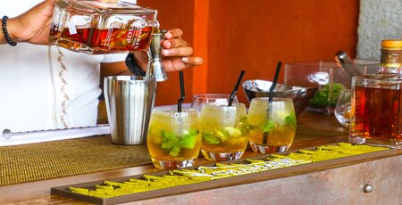
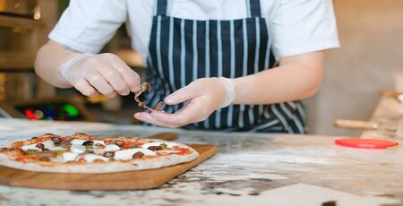

Preparação de nossos drinks
Em nossa pizzaria, a experiência não se limita apenas à pizza. Nossos drinks são uma celebração de sabor e inovação. Com uma variedade de coquetéis refrescantes e exclusivos, criamos combinações de sabores únicas que complementam perfeitamente nossas pizzas. De clássicos a criações exclusivas da casa, nossos drinks adicionam um toque de sofisticação e diversão à sua refeição. Aproveite cada gole e celebre conosco!
Saiba maisPreparação de nossas pizzas
Na nossa pizzaria, a arte de criar as melhores pizzas é uma paixão que se traduz em cada fatia. Começamos com a massa fresca feita diariamente, seguida de uma seleção de ingredientes de alta qualidade. Cada pizza é cuidadosamente montada e assada no forno para a perfeição. O resultado é uma explosão de sabores que conquista o paladar dos nossos clientes, tornando cada mordida uma experiência inesquecível.
Saiba mais


{kind=link}
{kind=link}
Um pouco mais sobre nossa Pizzaria!
Pizzarte, onde a paixão pela pizza se transforma em deliciosas experiências. Nossa jornada começa com a massa fresca, cuidadosamente preparada diariamente, e uma seleção de ingredientes de alta qualidade. Cada pizza é uma obra de arte, montada à mão e assada com perfeição em nosso forno de pedra. Mas a experiência vai além da pizza. Oferecemos uma variedade de coquetéis exclusivos e refrescantes, criados para complementar nossos pratos.
Nossa equipe dedicada se esforça para proporcionar um ambiente acolhedor e agradável, onde amigos e famílias podem se reunir para desfrutar de momentos inesquecíveis. Junte-se a nós e saboreie o melhor da gastronomia italiana com um toque de criatividade e hospitalidade.
Saiba mais
Trabalho feito por um grupo da turma 966 de Desenvolvimento de Aplicações Web, com o Professor Marcelo Perantoni!
👍 Um salve para quem leu! 👍